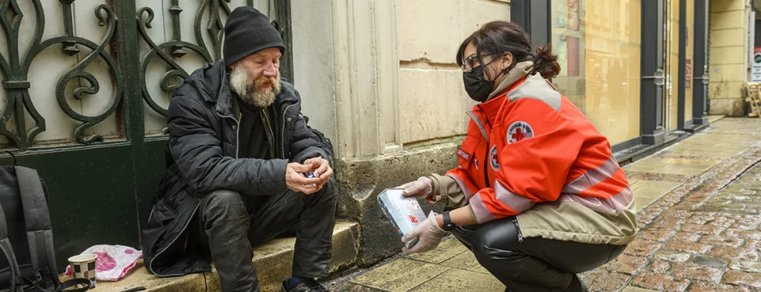

Dans une société en proie aux crises, les frontières entre les secteurs sanitaire et social deviennent de plus en plus ténues. L'ensemble des Français partagent des vulnérabilités et subissent encore de nombreuses difficultés, aggravées par les crises qui se superposent.
Présente avant, pendant, et après les crises, la Croix-Rouge française couvre un large spectre d’actions au service des populations, de la prévention et l’éducation jusqu’au relèvement et au retour à l’autonomie, en passant par la prise en charge d’urgences et le soutien au quotidien.
Aides alimentaire et vestimentaire , maraudes, transport social : notre association se mobilise au plus près des populations vulnérables pour leur apporter des réponses adaptées à leurs besoins. Elle développe également des actions d’« aller vers » à destination des personnes les plus isolées et est un acteur majeur de l’accès aux droits et aux soins sur les territoires métropolitain et ultramarins.
Cette présence se traduit notamment par un engagement fort pour répondre aux difficultés liées à la santé mentale et au bien-être psychologique, auxquelles 12 millions de Français seront confrontés à horizon 2030.
